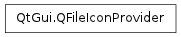

QFileIconProvider ¶

Detailed Description ¶
The PySide.QtGui.QFileIconProvider class provides file icons for the PySide.QtGui.QDirModel and the PySide.QtGui.QFileSystemModel classes.
- class PySide.QtGui. QFileIconProvider ¶
-
Constructs a file icon provider.
- PySide.QtGui.QFileIconProvider. IconType ¶
-
Constant Description QFileIconProvider.Computer QFileIconProvider.Desktop QFileIconProvider.Trashcan QFileIconProvider.Network QFileIconProvider.Drive QFileIconProvider.Folder QFileIconProvider.File
- PySide.QtGui.QFileIconProvider. icon ( info ) ¶
-
Parameters: info – PySide.QtCore.QFileInfo Return type: PySide.QtGui.QIcon Returns an icon for the file described by info .
- PySide.QtGui.QFileIconProvider. icon ( type )
-
Parameters: type – PySide.QtGui.QFileIconProvider.IconType Return type: PySide.QtGui.QIcon Returns an icon set for the given type .
- PySide.QtGui.QFileIconProvider. type ( info ) ¶
-
Parameters: info – PySide.QtCore.QFileInfo Return type: unicode Returns the type of the file described by info .